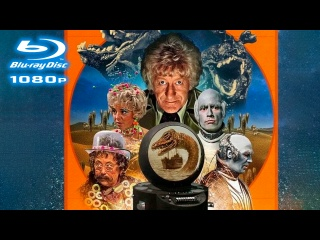
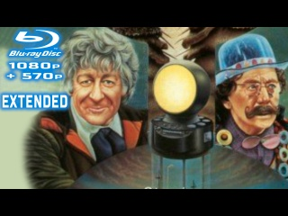
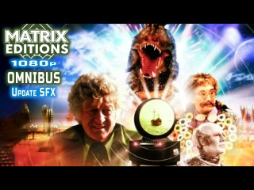
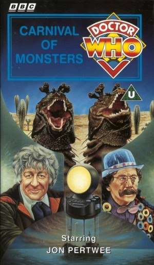
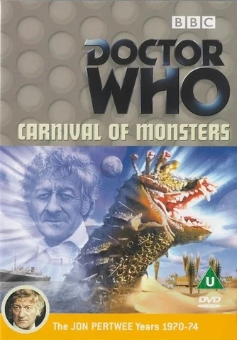
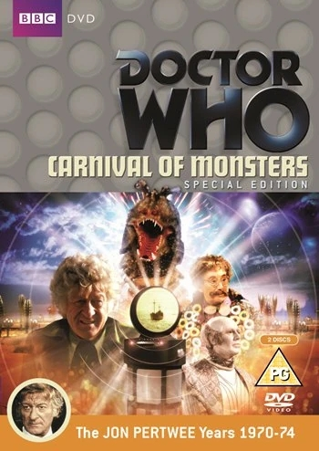
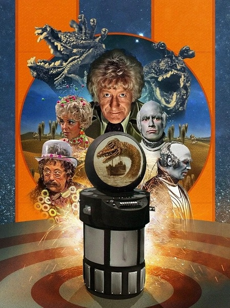

Субтитры: Русские и Английские |  |
|---|---|
+ Ранний монтаж (эпизод 2) расширенный Субтитры: Русские и Английские |  |
с обновлением визуальных эффектов (cunningmunki) Субтитры: отсутствуют |  |
| Все эпизоды сохранились в цвете (видеокассета PAL 2") |
|---|
|
ТАРДИС материализуется на борту грузового судна «Бернис», плывущего по Индийскому океану в 1926 году. Но корабль зациклен во времени — одни и те же события повторяются снова и снова. Выясняется, что «Бернис» вместе с Доктором и Джо находится внутри минископа — устройства, сжимающего живые существа и целые миры до миниатюрных размеров. Его владельцы, бродячие шоумены Ворг и Ширна, демонстрируют миниатюрные миры как ярмарочный аттракцион на планете Интер-Минор, не подозревая, что внутри одной из колб — настоящий Повелитель Времени. Серия примечательна структурой «мир-в-мире» и сатирой на бюрократию и ксенофобию.
 VHS - март 1995 |  DVD - июль 2002 |
|---|---|
  DVD-SE+Boxset - 28 марта 2011 |  Blu-ray (обновленный сезон) - 8 июля 2019 * Версия в нашей группе |
